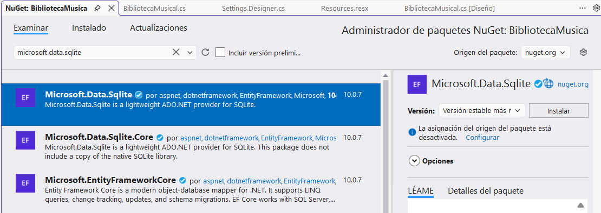

Inicio
El acceso a bases de datos es una de las partes más importantes del desarrollo de aplicaciones reales, ya que casi todos los sistemas (web, escritorio o móviles) dependen de la gestión de datos.
Objetivo del tema
El objetivo principal es que seas capaz de desarrollar aplicaciones en C# que interactúen con bases de datos de forma segura y eficiente, entendiendo qué ocurre “por dentro” cuando una aplicación guarda o recupera información.
¿Qué vamos a aprender?
En este bloque trabajaremos conceptos fundamentales como:
- Conexión a bases de datos desde C#
- Ejecución de consultas SQL (SELECT, INSERT, UPDATE, DELETE)
- Manejo de resultados de consultas
- Uso de clases como
SqliteConnection,SqliteCommandySqliteDataReader
SQLite
¿Por qué SQLite?
- SQLite es un SGBD de pequeño tamaño que emplea el lenguaje SQL para realizar las consultas.
- Es ideal para aplicaciones de escritorio o móviles al guardar todo en un archivo y sin necesidad de software externo
¿Y cómo conectar con otros SGBD?
De forma similar se puede conectar con SGBD más potentes (Oracle, MySQL, SQL Server, …) sólo se diferenciará por la instalación y las clases que se utilizarán.
Instalar SQLite
Proceso para cada proyecto
- Se puede instalar haciendo clic derecho en dependencias e instalando como un paquete NuGet Debemos buscar Microsoft.Data.Sqlite SE INSTALA POR PROYECTO
¿Qué es Nuget?
- NuGet es el administrador de paquetes oficial para .NET
- Acabaremos añadiendo using Microsoft.Data.Sqlite; en nuestro .cs
Captura de pantalla

Ejecutar SQL
Interactuar con la Base de Datos
Para interactuar con la base de datos, usaremos tres clases principales (para SQLite):
- SqliteConnection : Establece la conexión con el archivo de la base de datos.
- SqliteCommand : Representa la orden SQL que vamos a ejecutar.
- SqliteDataReader : Nos permite leer los resultados de una consulta SELECT fila por fila.
Flujo de trabajo
graph TD;
A[Crear Conexion] --> B[Abrir]
B --> C[Comando SQL]
C --> D{¿SELECT?}
D -- Sí --> E[ExecuteQuery]
D -- No --> F[ExecuteNonQuery]
E --> G[Cerrar]
F --> G[Cerrar]- Crear conexión
1using (SqliteConnection conexion = new SqliteConnection(cadena)) - Open() → OPEN
1conexion.Open(); - Usar BD → OK
1 2 3 4
using (SqliteConnection conexion = new SqliteConnection(cadena)) SqliteCommand comando = conexion.CreateCommand(); comando.CommandText = "CREATE TABLE IF NOT EXISTS Personas (Nombre TEXT);"; comando.ExecuteNonQuery(); - Salir de using → CLOSE automático
¿Cómo ejecutar las consultas SQL?
- Primero se crea el comando:
1 2
SqliteCommand comando = conexion.CreateCommand(); comando.CommandText = "CREATE TABLE IF NOT EXISTS Personas (Nombre TEXT);"; -
A continuación llamamos al comando para ejecutar:
- comando.ExecuteNonQuery: para INSERT, UPDATE, DELETE
- comando.ExecuteReader: para sentencias SELECT
- comando.ExecuteScalar(): Para sentencias SELECT que devuelven un único valor (ej: COUNT(*) ).
1 2 3 4 5 6 7 8 9 10 11 12 13 14 15 16 17 18 19 20 21 22 23 24 25 26 27 28 29 30 31 32 33 34 35 36 37 38 39 40 41 42 43 | |
About
Curso creado por Herminia Pastor Pina
Curso Cefire: Creació de Recursos amb MarkDown
Por tanto, esta web ha sido creada con:
- MkDocs
- Tema: Material
- Markdown